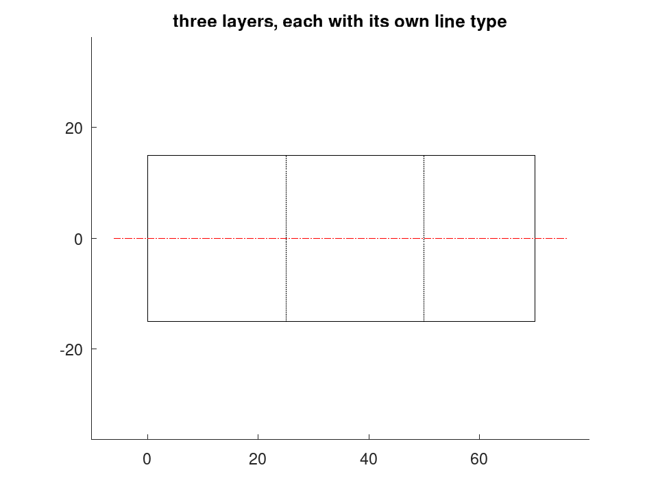
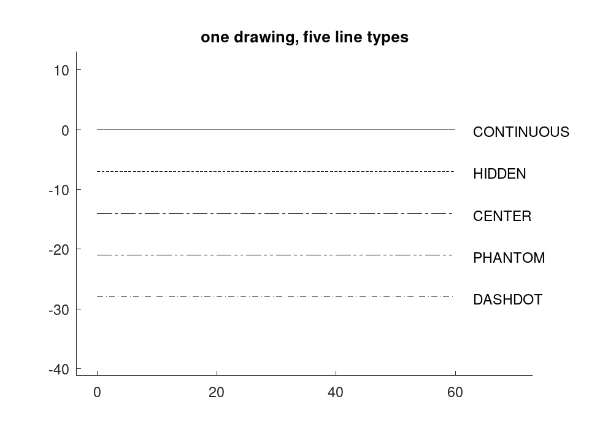
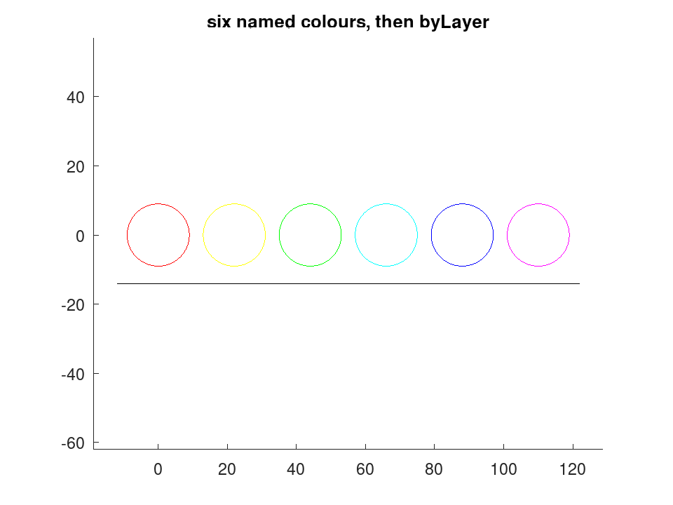

draw.Drawing
drafting: draw.Drawing
A two-dimensional drawing in model space.
draw.Drawing holds an ordered list of drawing entities in
millimetres, each assigned to a named layer, together with the machinery to
append more. It is the single geometry model behind every output format:
the CAD file, the report figure and the screen preview are three renderings
of one draw.Drawing.
The class is a value class, so every method that appends an entity returns a new object and the original is unchanged. Append methods are written to chain:
D = draw.Drawing ('plate');
D.Layer = 'outline';
D = D.polyline ([0, 0; 160, 0; 160, 180; 0, 180], true);
D = D.circle ([80, 90], 25).text ([0, -20], 'PLATE', 3.5);
|
New entities take the layer, line type and colour that are current when
they are appended, exactly as a CAD application draws on its current layer
with its current pen. Set Layer, Linetype or Colour
first and then draw; no append method takes any of the three as an argument.
Each governs what follows it and never what came before.
Properties rather than arguments is what lets a caller state a drawing convention once and then draw against it, which is how a draughtsman works and how CAD is built. It is also why a dimension’s exploded parts inherit all three: the rule has no exceptions.
Dimensions are stored semantically — the two measured points, a perpendicular offset and a direction — and are turned into lines, arrowheads and text by whichever backend renders them. Nothing about how a dimension looks is decided here, which is what keeps a dimension truthful when the geometry it measures moves.
A drawing reports what it holds through numentities, layers
and bbox, and hands its contents to a backend through
entities, which lowers them to the primitives a file can carry. That
lowered list is what plot, print, tikz and
dxf.write all consume, so a figure shows the entities the file will
contain rather than a more flattering rendering of them.
See also: dxf.write, geom.bbox
Source Code: draw.Drawing
The draw.Drawing class contains the following properties:
The name of the drawing, as a character vector. It is carried into the
output wherever the format has somewhere to put it: a DXF file records
it, a TikZ picture writes it into a comment. It defaults to
'untitled' and never affects the geometry.
The name travels with the drawing into whatever the output can hold: a DXF file records it, a TikZ picture writes it into a comment. It never affects the geometry.
D = draw.Drawing ('bracket');
D = D.polyline ([0, 0; 60, 0; 60, 40; 0, 40], true);
D.Name
ans = bracket
Renaming an existing drawing is an ordinary assignment, because the name is a property and not something fixed at construction.
D.Name = 'bracket rev B'; D.Name
ans = bracket rev B
The layer that entities are placed on as they are appended, as a
character vector. It defaults to '0', the layer every CAD
drawing has.
Like Linetype and Colour, it applies to what is appended
after it is set and never to what came before, so a drawing is
built by setting a property and then adding the entities that belong to
it. Reading it back says where the next entity will go, not where the
existing ones are; for that, use layers.
Layer, line type and colour are properties, not arguments: they apply to what is appended after they are set and never to what came before. That is how a draughtsman works, and how CAD is built.
D = draw.Drawing ('shaft');
D.Layer = 'BODY';
D = D.polyline ([0, -15; 70, -15; 70, 15; 0, 15], true);
D.Layer = 'HIDDEN';
D.Linetype = 'HIDDEN';
D = D.line ([25, -15], [25, 15]).line ([50, -15], [50, 15]);
D.Layer = 'AXES';
D.Linetype = 'CENTER';
D.Colour = 'red';
D = D.line ([-6, 0], [76, 0]);
D.layers ()
ans =
{
[1,1] = AXES
[1,2] = BODY
[1,3] = HIDDEN
}
plot (D);
title ('three layers, each with its own line type');

The line type that entities are drawn with as they are appended, named
as a character vector: one of CONTINUOUS, HIDDEN, CENTER, PHANTOM,
DASHED, DASHDOT or DOT. It defaults to 'CONTINUOUS'.
It governs what is appended after it is set, never what came before. The dash lengths themselves are model dimensions scaled by each backend’s line-type scale, not a property of the drawing.
The current line type governs what is appended after it is set. Here one drawing carries five, and each run of geometry keeps the type it was drawn with.
LTScale multiplies the dash lengths, which are model dimensions: on a short line the pattern needs enlarging before it reads as itself.
D = draw.Drawing ('types');
y = 0;
for lt = {'CONTINUOUS', 'HIDDEN', 'CENTER', 'PHANTOM', 'DASHDOT'}
D.Linetype = lt{1};
D = D.line ([0, y], [60, y]);
D = D.text ([63, y - 1.2], lt{1}, 3.5);
y -= 7;
endfor
plot (D, 'LTScale', 2);
title ('one drawing, five line types');

The colour that entities are drawn in as they are appended, as an
AutoCAD colour index from 0 to 256 or as a colour name accepted by
draw.colour. It defaults to 256, which is 'byLayer' —
the entity takes whatever colour its layer carries, which is how a CAD
drawing is normally organised.
It governs what is appended after it is set, never what came before.
A colour is an AutoCAD index, or a name that draw.colour resolves to one. It applies to what is appended after it is set.
D = draw.Drawing ('colours');
x = 0;
for c = {'red', 'yellow', 'green', 'cyan', 'blue', 'magenta'}
D.Colour = c{1};
D = D.circle ([x, 0], 9);
x += 22;
endfor
256 is 'byLayer', the default: the entity takes whatever colour its layer carries, which is how a CAD drawing is normally organised.
D.Colour = 256;
D = D.line ([-12, -14], [x - 10, -14]);
plot (D);
title ('six named colours, then byLayer');

The draw.Drawing class offers the following public methods:
Drawing |
Create an empty drawing, optionally named. |
numentities |
Return the number of entities in the drawing. |
isempty |
Return true when the drawing holds no entities. |
layers |
Return the layers the drawing actually uses, as a sorted cellstr. |
bbox |
Axis-aligned extents of the drawing, as ‘[XMIN, YMIN, XMAX, YMAX]’ in millimetres. |
line |
Append a straight line segment from P1 to P2. |
point |
Append a single point. |
polyline |
Append a polyline through the vertices given as rows of P. |
arc |
Append a circular arc centred on C with radius R. |
circle |
Append a full circle centred on C with radius R millimetres. |
ellipse |
Append an ellipse centred at C with semi-axes A and B. |
text |
Append the single-line text S with its insertion point at P. |
hatch |
Append a hatched region bounded by the closed polygon P. |
dim |
Append a dimension measuring between P1 and P2. |
diam |
Append a diameter dimension across a circle. |
radius |
Append a radius dimension from a centre out to an arc. |
angdim |
Append an angular dimension at a vertex. |
centremark |
Append the small cross that marks the centre of a round feature. |
leader |
Append a leader: an arrow to a feature with a note at its tail. |